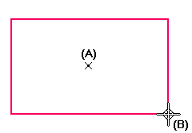

Rectangle by Center command
Use the Rectangle by Center command  to draw a rectangle by defining its center and corner. The first point defines the
center of the rectangle, and the second point defines the height and width.
to draw a rectangle by defining its center and corner. The first point defines the
center of the rectangle, and the second point defines the height and width.

You can press and hold the Shift key to create a square.